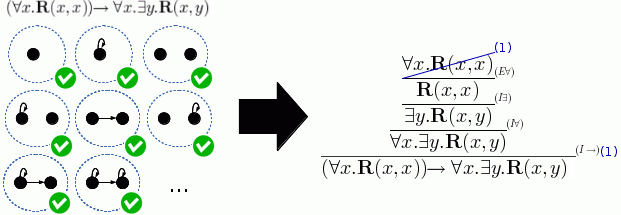

วิชาคณิต

อนุกรมฟีโบนักชีคือลำดับตัวเลขที่เกิดจากการนำสองตัวหน้ามาบวกกัน ($1, 1, 2, 3, 5, 8, 13, \dots$) ซึ่งเมื่อนำอัตราส่วนของเลขสองตัวที่อยู่ติดกันมาหารกัน ค่าจะลู่เข้าสู่อัตราส่วนทองคำ (Golden Ratio) หรือประมาณ $1.618$ สิ่งที่น่าทึ่งคือรูปแบบตัวเลขนี้ไม่ได้เป็นเพียงทฤษฎีบนกระดาษ แต่ปรากฏอยู่ทั่วไปในธรรมชาติอย่างเรียบง่าย เช่น การเรียงตัวของเมล็ดทานตะวัน เกลียวนอกของสับปะรด โครงสร้างเปลือกหอยนอติลุส ไปจนถึงวงแขนของดาราจักร สถาปนิกและนักออกแบบจึงนำสัดส่วนนี้มาใช้สร้างสรรค์ผลงานที่สร้างความรู้สึกสมดุลและสวยงามทางทัศนศิลป์